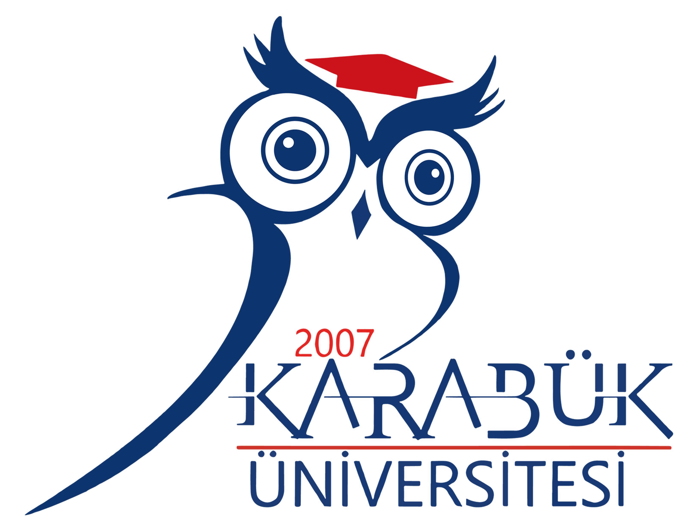

Bilgisayar Teknolojileri Yolunu Keşfet
Bu test, ezberlediğin teknik bilgiyi değil; problem çözme tarzını, mantık yürütme biçimini
ve teknolojiye doğal eğilimini ölçer.
Aşağı kaydır, sorulara içgüdülerinle cevap ver ve sana en uygun bilgisayar bilimleri
alanlarını birlikte keşfedelim. Toplam 30 soru var.

Teste Başlamadan Önce
Bu test, bilgisayar bilimleriyle ilgili senaryo ve problemler içerir. Her sorunun diğerlerine göre daha doğruya yakın bir cevabı vardır; seçenekleri dikkatlice oku ve sana en mantıklı geleni işaretle.
Test, temel teknik bilginin yanında problem çözme ve mantık yürütme becerini
de ölçmeyi hedefler.
Bilimsel Dayanaklar: Bu test, IEEE SWEBOK yetkinlik çerçevesi temel alınarak hazırlanmış; soru ağırlıkları Saaty’nin AHP (Analitik Hiyerarşi Süreci) modeli ile hesaplanmış ve soru kalitesi Bloom Taksonomisi kriterlerine göre standardize edilmiştir.
Test Sonucun
Bu sonuç, testte verdiğin yanıtlara göre oluşturulmuş basit bir analizdir. Kendi metodolojine göre puan aralıklarını ve açıklamaları rahatlıkla güncelleyebilirsin.